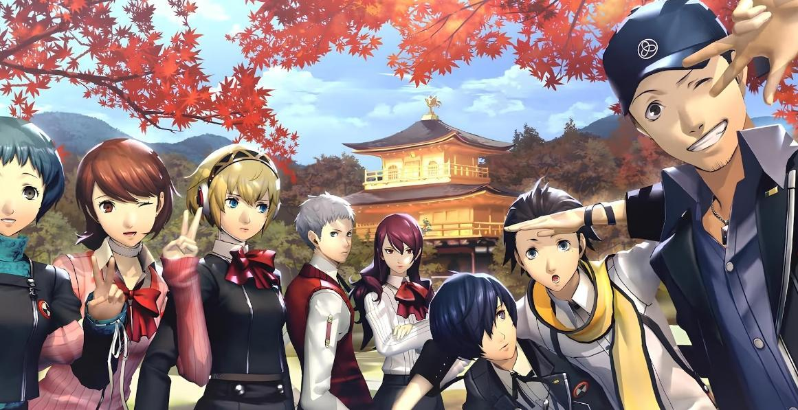
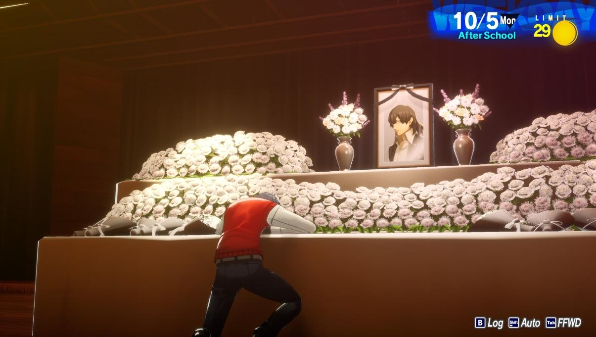
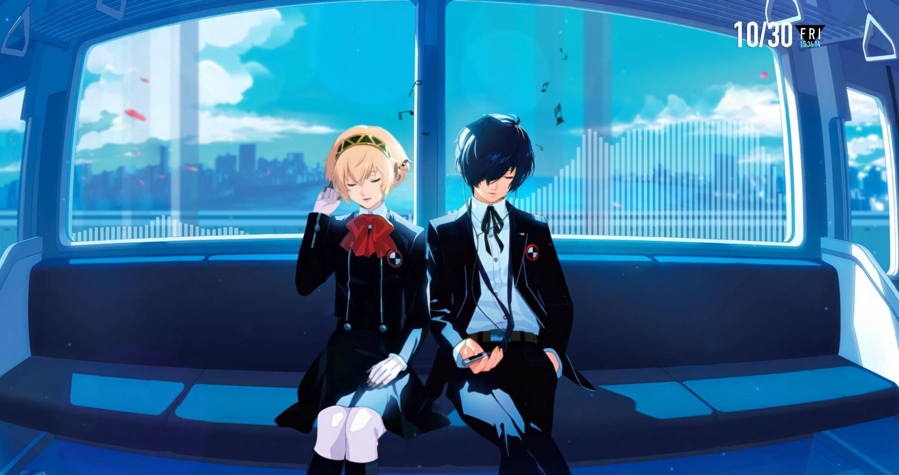

Persona Database & Stats
Analyseer de elementen en zwaktes van het Specialized Extracurricular Execution Squad (S.E.E.S.) team om je optimaal voor te bereiden op de gevechten in Tartarus.

| Persona | Element Type | Primary Weakness | Owner |
|---|---|---|---|
| Orpheus | Vuur (Agi) | Elektriciteit (Zio) / Duisternis (Mudo) | Protagonist |
| Io | Wind (Garu) / Heal | Elektriciteit (Zio) | Yukari Takeba |
| Hermes | Vuur (Agi) / Slash | Wind (Garu) | Junpei Iori |
| Penthesilea | IJs (Bufu) | Vuur (Agi) | Mitsuru Kirijo |
| Polydeuces | Elektriciteit (Zio) | IJs (Bufu) | Akihiko Sanada |
| Lucia | Support / Analyse | Geen | Fuuka Yamagishi |
| Castor | Strike / Slash | Geen | Shinjiro Aragaki |
| Cerberus | Vuur (Agi) / Duisternis (Mudo) | Licht (Hama) | Koromaru |
| Nemesis | Licht (Hama) / Pierce | Duisternis (Mudo) | Ken Amada |
| Palladion | Pierce / Slash / Strike | Elektriciteit (Zio) | Aigis |

